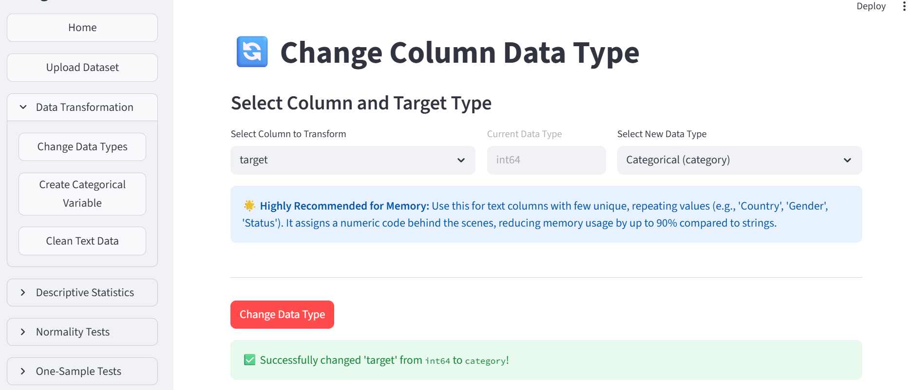
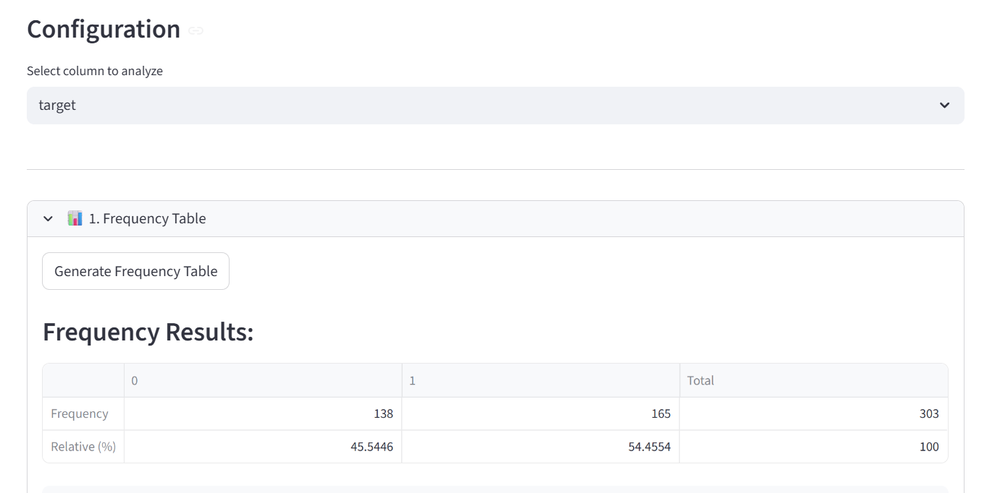
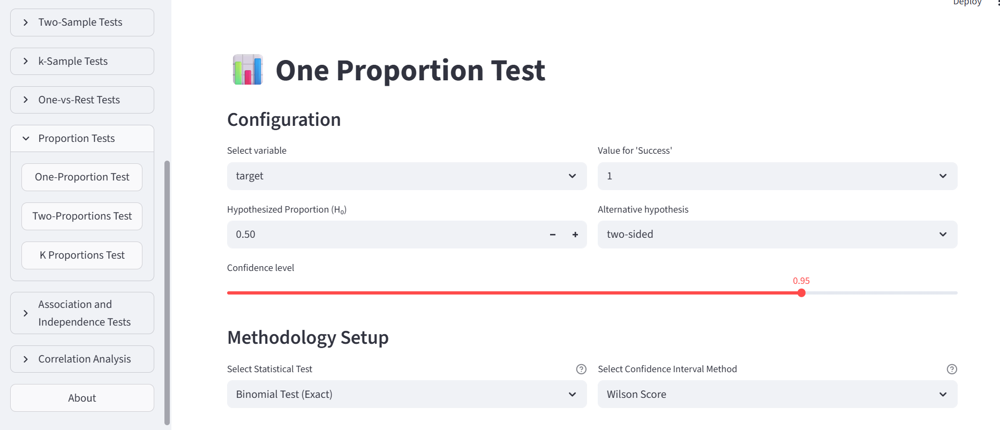
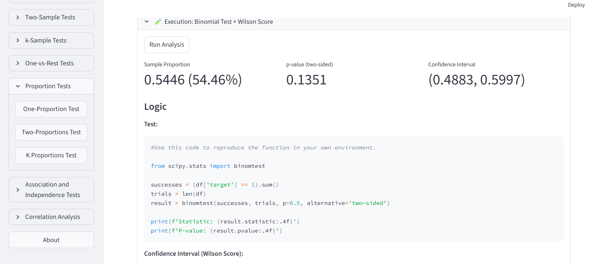
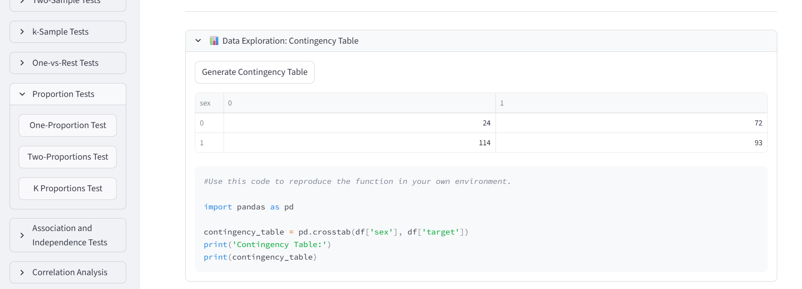
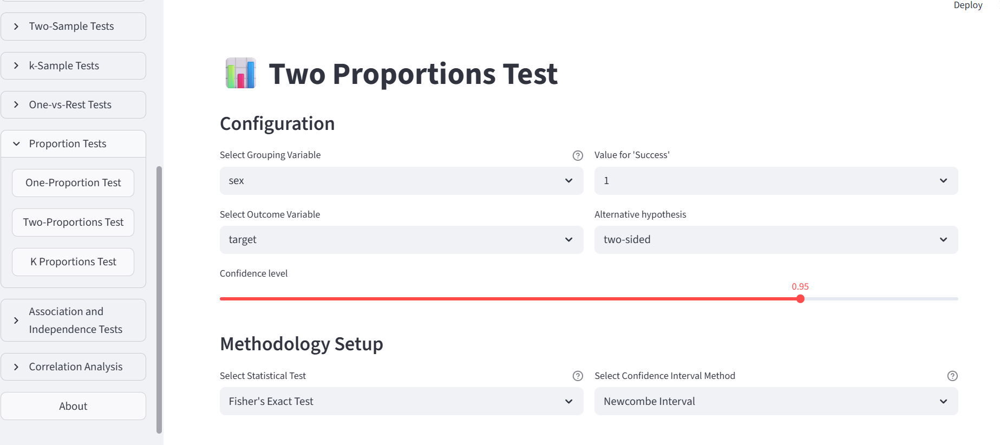
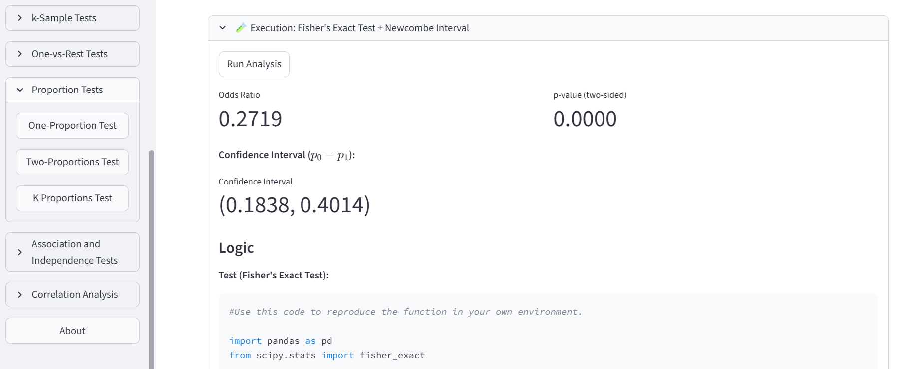

03 · Proporciones
Contar un evento y probar una proporción
Presentación del escenario
¿La proporción de personas con la enfermedad es compatible con el 50 %? Usaremos el archivo heart para realizar una prueba binomial y obtener un intervalo de confianza.
En este archivo, target = 1 significa que la persona tiene la enfermedad y target = 0 que no la tiene. El 50 % es una referencia para practicar.
1. Cargar los datos
- Carga el CSV de
hearten Upload Dataset. - En Data Transformation → Change Data Types, convierte
targeten variable categórica. - En Descriptive Statistics → Categorical Variables, selecciona
targety genera su tabla de frecuencias.


En este ejemplo, 165 de 303 personas tienen la enfermedad: aproximadamente 54,46 %. La pregunta es si esa diferencia respecto al 50 % es estadísticamente significativa.
La prueba binomial trabaja con un evento binario y observaciones independientes, bajo un modelo de probabilidad común. No exige normalidad ni igualdad de varianzas, y su versión exacta puede utilizarse sin grandes muestras.
2. Ejecutar la prueba
En Proportion Tests → One-Proportion Test, configura:
- Variable:
target; Value for Success:1(tener la enfermedad). - Proporción de referencia: 0.5 (50%).
- Alternativa: two-sided, para buscar diferencias en ambos sentidos.
- Prueba: Binomial Test (Exact).
- Intervalo: Wilson Score; confianza: 0.95.
La hipótesis nula es que la proporción de personas con la enfermedad es igual a 50%. Pulsa Run Analysis. Aquí «success» solo nombra el evento contado; no significa un resultado favorable.


En el ejemplo, el valor p es 0,1351. Como supera 0,05, no hay evidencia suficiente para descartar que la proporción de personas con la enfermedad sea igual al 50 %. Esto no demuestra que sea exactamente el 50 %.
El intervalo de Wilson va aproximadamente del 48,83 % al 59,97 % e incluye el 50 %. La prueba binomial y el intervalo de Wilson son dos procedimientos distintos que aquí ofrecen lecturas compatibles.
Localiza binomtest bajo el resultado. Identifica el número de casos del evento, el total, la referencia p=0.5 y la alternativa two-sided. Observa que ese p=0.5 es un dato de entrada; no es el valor p que devuelve la prueba.
3. Comparar la proporción entre dos grupos
Ahora la pregunta es: ¿es igual la proporción de personas con la enfermedad entre mujeres y hombres? En este archivo, sex = 0 corresponde a mujeres y sex = 1 a hombres. Convierte sex en variable categórica y revisa la tabla de contingencia sex × target.
Grupo sex |
Sin enfermedad (0) | Con enfermedad (1) | Total | % con enfermedad |
|---|---|---|---|---|
| 0 (mujeres) | 24 | 72 | 96 | 75,00 % |
| 1 (hombres) | 114 | 93 | 207 | 44,93 % |

En Proportion Tests → Two-Proportions Test, selecciona sex como agrupación, target como outcome y 1 como success. Elige two-sided, Fisher’s Exact Test y un intervalo Newcombe con confianza 0.95. Ejecuta el análisis.

La hipótesis nula es que las dos proporciones son iguales. Fisher es una opción exacta para la tabla 2 × 2 y no exige recuentos esperados grandes. Si eliges una chi-cuadrado, revisa antes los recuentos esperados y las condiciones de ese método.

El resultado muestra p < 0,001. La diferencia mujeres − hombres (0 − 1) es 30,07 puntos porcentuales, con un intervalo aproximado de 18,38 a 40,14 puntos. El intervalo no incluye cero: en este archivo la proporción de personas con la enfermedad es mayor entre las mujeres. Esto no establece una relación causal.
La captura también presenta el odds ratio. Es otra medida, no la confundas con la diferencia de proporciones. Para la diferencia, la referencia de igualdad es 0; para el odds ratio, es 1.
En el código Python, localiza fisher_exact, comprueba el orden de la tabla y encuentra el cálculo del intervalo.
Para el aprendizaje Cambia solo el nivel de confianza y observa qué pasa con la amplitud del intervalo y qué parte del código cambia.